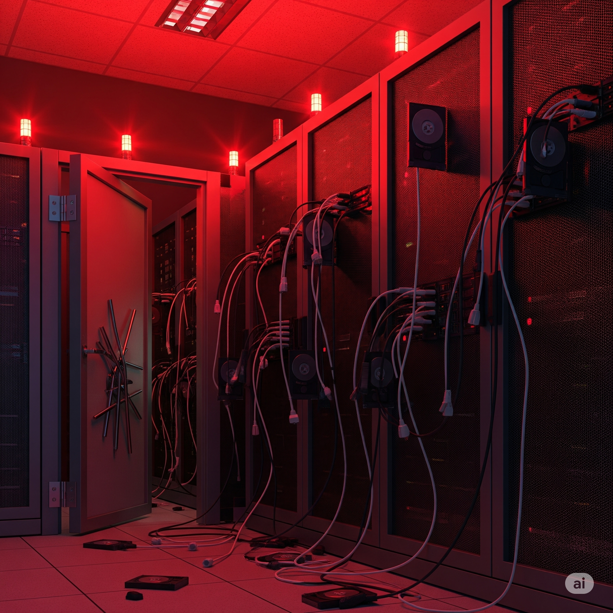

VeriCore Analytics'e hoş geldin, Olay Müdahale Uzmanı! Bu sabah şirketin birincil veri merkezi fiziksel bir saldırıya uğradı. Güvenlik kayıtları zorla girildiğini gösteriyor ancak olay sırasında birkaç CCTV kamera çevrimdışıydı. Bazı depolama sürücülerinin söküldüğü ve kritik ağ anahtarlarının kapatıldığı görülüyor. Görevin: Hasarı kontrol altına almak, adli kanıtları toplamak ve soruşturmadan ödün vermeden operasyonları yeniden başlatmak.

Simülasyon Rolleri
Senin Rolün: Olay Müdahale Uzmanı Adli bilişimden kurtarmaya ve iletişime kadar tüm müdahale sürecinden sorumlusun.
BT Operasyon Lideri Önceliği, servisleri mümkün olan en kısa sürede yeniden çevrimiçi hale getirmek.
Hukuk Departmanı Lideri Kanıtların korunması ve yasal yükümlülükler konusunda endişeli.
Temel Metrikler
Veri Bütünlüğü Verilerin ve kanıtların güvenliği. (Başlangıç: 100%)
Finansal Kayıp Kesinti ve kurtarma maliyeti. (Başlangıç: ₺0)
Hizmet Sürekliliği Servislerin aktif olma yüzdesi. (Başlangıç: 0%)
Müşteri Güveni Müşterilerin şirketinizin güvenliğine olan inancı. (Başlangıç: 100)